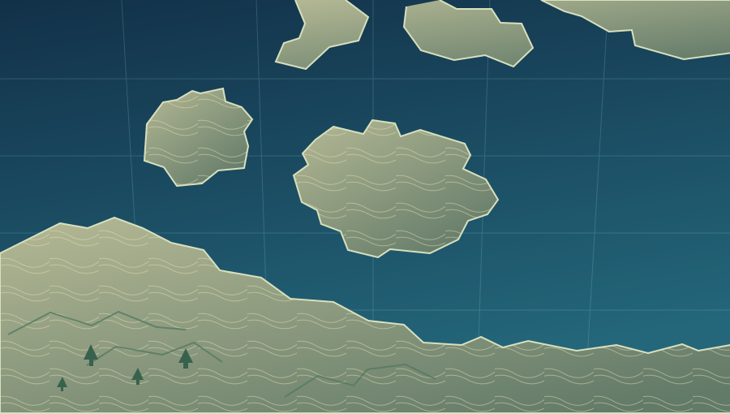
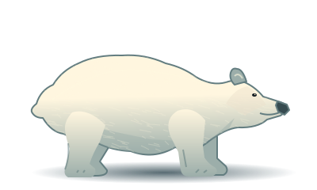
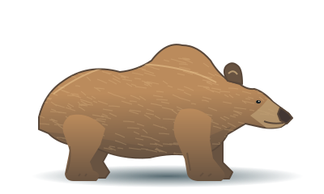
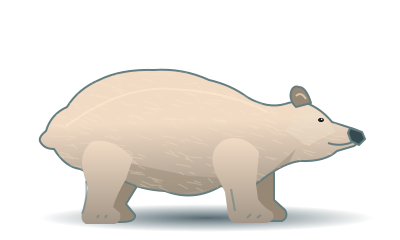

Arctic field station / Unit 5 / Lesson 6
Arctic Bear Futures
& Hybridization
As the Arctic warms, could bears with two kinds of ancestry thrive?
01 / Climate evidence
How much time might bears have to adapt?
Compare September sea-ice area under four emissions scenarios. Observations are measurements. Scenarios are projections based on different assumptions, not promises about what will happen.
Compare like with like. Sea-ice area adds up the ice-covered part of qualifying cells. Extent counts the entire area of each cell with at least 15% ice. Lesson 1’s Wapusk chart uses annual minimum extent. This graph uses September area and also shows projections, so the plotted values are not directly comparable. See NSIDC’s comparison.
Open the data table
Selected readings rounded to 0.1 million km² from Richard Toohey’s figure (Polar Bears International, reproduced in OpenSciEd’s Future Predictions). The original graph marks sea-ice area around or below 1 million km² as practically ice-free in September. That does not mean zero ice year-round.
02 / Real-world evidence
Trace one DNA-confirmed family
Inuvialuit observers described unusual bears in the Arctic. In 2006, researchers confirmed an unusual bear from Banks Island had one polar bear and one brown bear parent. Examine both islands and trace the family researchers later reconstructed using DNA.



Canadian Arctic · schematicThe animated positions show a possible habitat overlap, not a tracked movement or forecast.
Select an offspring to trace its parents
Choose a bear. Parent cards are highlighted and named when you select an offspring.
03 / Classroom simulation
Model ten matings, four traits each
A gene variant, or allele, is a version of a gene. In this model, each offspring gets one copy from each parent. The polar parent always contributes the same variant for each gene. The coin selects which copy the brown parent contributes.

Model offspring04 / Submit your evidence
Could hybrids thrive in a warming Arctic?
Keep a backup of this activity
These files contain your work for Lesson 6 only, with the same name, period and Dataset ID as the report. They are for reading or sharing, not for restoring browser work.
Your work is saved in this browser. Preview the report to keep a copy.
Sources and model limits
Adapted from OpenSciEd B.5 Lesson 6 Future Predictions, Mating Between Bear Species, Making Sense of Matings, and the Hybridization Model. The graph is an original redraw of selected values from the lesson’s figure and does not reproduce uncertainty ranges. Original illustrations are schematic. The family is real; the ten-mating classroom cohort is simulated. Brown bears in this Arctic example are grizzlies.
Pongracz et al. (2017), hybridization and DNA evidence. Miller, Wilder & Wilson (2015), encounter data. Inuvialuit observations: Joint Secretariat, Inuvialuit and Nanuq (2015), discussed in the Lesson 6 slides.